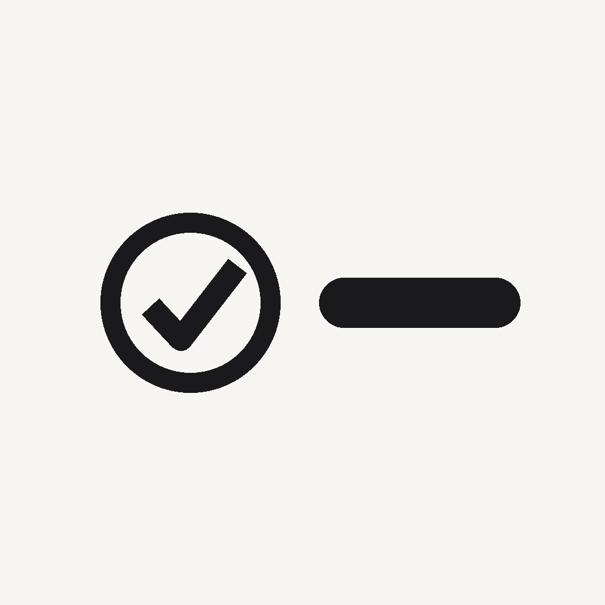

아!맞다
One-second capture for iPhone & iPad
About
아!맞다 ("Oh, right!") is for the thought that shows up while your hands are full — and is gone thirty seconds later. Open the app and the cursor is already waiting. Type a line and press return, or hold the mic and just say it. That's the whole app.
What you jot down lives on your Home Screen and Lock Screen as a widget, so you don't have to remember to go look for it. No due dates, no reminders, no categories, no priorities — nothing to maintain. That restraint is the point: a list you have to manage is a list you stop using.
Features
- Cursor ready the moment you open — type, press return, done
- Voice capture that stops on its own when you stop talking
- Fully on-device Korean speech recognition — your voice never leaves your iPhone
- Home Screen and Lock Screen widgets, plus a Live Activity option
- Control Center and Action Button shortcuts straight into voice capture
- iCloud sync — the same list on your iPhone and iPad
- Three themes, and a design that stays out of the way
- No ads · no accounts · no tracking
Support
Questions, bug reports, or feedback? Email nninnis.dev@gmail.com and I'll get back to you.